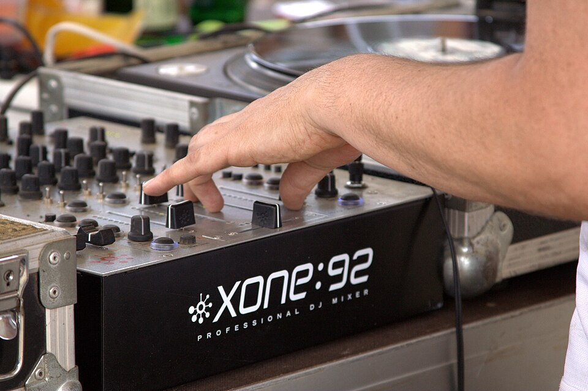

How to choose DJ software without wasting the purchase
The software decision is usually made for you by the controller in the box, the club you want to play in, or the licence you already own. Here is how to work out which of those applies, what each ecosystem costs over three years, and what you lose if you change your mind.

People agonise over this decision as though the four main platforms were four personalities they have to live with. In practice, three things usually decide it before you install anything: which licence came with your controller, whether you need to export USB sticks for club CDJs, and whether you would rather pay monthly or once. Work those out and the choice is mostly made for you.
What follows is that order, with the 2026 prices and the part nobody mentions until after the switch: your cue points and beat grids do not travel with you.
The decision, in the right order
- What did your controller come with? A bundled full licence is worth $149–$299. Buying software that duplicates a licence you already own is the most common waste in this category.
- Will you play on CDJs? If yes, rekordbox's export format is the de facto standard for preparing USB sticks. That single requirement overrides most other preferences.
- Do you scratch or use DVS? Serato DJ Pro has the deepest DVS and scratch support, and the widest hardware partner list for battle and club setups.
- Monthly or once? Traktor and Serato can be bought outright; rekordbox and djay cannot. Over three years that difference is a few hundred dollars — Serato DJ Pro at $299 beats three years of rekordbox Core at $360.
- Do you want standalone? If you play on a laptop-free system, its software is part of the purchase and you are not really choosing.
Skip to your own situation
If you already own a controller or know which one you are buying, the software advisor turns these prices into an answer for your hardware, computer and budget — including whether your controller's licence is the free one or the paid one.
What each ecosystem costs in 2026
| Platform | Price | Model | It is the right answer if… |
|---|---|---|---|
| rekordbox (AlphaTheta) | Free plan · Core $12/mo or $120/yr · Creative $18/mo or $180/yr · Professional $36/mo or $360/yr | Subscription only | You play on Pioneer/AlphaTheta gear, or need CDJ USB exports. The free plan covers library work, analysis and export — and Performance mode while a Hardware Unlock controller is connected. |
| Serato DJ Pro | Lite free · Pro $11.99/mo or $299 once · Suite $14.99/mo or $499 once (adds DVS, Video, Pitch 'n Time, Flip, Club Kit and the iOS app) | Subscription or perpetual | You scratch, use timecode vinyl, or want to own the software outright. |
| Traktor | No free tier. Pro 4 $149 once; Traktor Play, the two-deck edition without recording, $49 once | Perpetual | You are on Traktor Kontrol hardware, or you want four decks and no subscription. |
| VirtualDJ | Free only with no controller attached · Home $4/mo (entry controllers, keeps the audio drop) · Pro $19/mo or $199/yr · Infinity licence available, price not published | Subscription (Infinity licence available) | You want one app for karaoke, video and almost any controller. |
| djay Pro | Free app with limited features · Pro $6.99/mo or $49.99/yr, covering Mac, iPad, iPhone and Android | Subscription | You are starting on an iPad or a laptop and do not yet know what you want. |
US list prices read from the vendors' own plan pages on 27 October 2026. Serato's monthly rate rose in late 2025; rekordbox moves its tiers more often than its free plan changes. Always confirm on the vendor's plan page. Answer seven questions for the version of this table that only shows what fits your hardware.
Three years, three bills
| What you choose | Three-year cost | What that buys |
|---|---|---|
| rekordbox Free (Hardware Unlock controller) | $0 | Library management, analysis, USB export and Performance mode with a controller that is on the Hardware Unlock list — the DDJ-FLX4 and FLX2 are. Many owners never need to pay at all. |
| rekordbox Core | $360 | Performance mode with any compatible gear, plus recording and mix sharing. Needed if your controller is not on the Unlock list — on listed controllers, recording and mix sharing are already free while connected. |
| Traktor Play | $49 | Two decks, Beatport streaming, basic stems, no recording. Upgrading to Pro 4 later costs only the difference. |
| djay Pro | ~$150 | Three years at $49.99/yr, across Mac, iPad, iPhone and Android. The cheapest multi-device route here. |
| Serato DJ Pro, one-time | $299 | The full Pro licence, owned. No further payments unless you want Suite features. |
| Serato DJ Pro, monthly | ~$432 | The same software, with the option to stop paying when you stop playing. |
| Traktor Pro 4 | $149 | Four decks, stems, one payment. The cheapest full-feature licence on this list. |
Two things follow from that table. First, if you already own a controller with a bundled licence, your effective software cost is zero and the comparison is over. Second, subscriptions only lose to perpetual licences if you quit — so be honest about whether this is a two-year hobby or a three-month experiment.
What switching actually costs
Nobody mentions this until they try it. The audio files move; the preparation does not.
- Cue points, loops and beat grids live in each program's database. Some tools convert between formats; most conversions are partial, and grids need re-checking by ear.
- Playlists and smart crates have to be rebuilt. On a 2,000-track library that is a weekend, not an afternoon.
- Analysis re-runs, which means a night of watching progress bars and correcting the tracks it gets wrong.
- Your prepared USBs are formatted for one ecosystem. If you have been exporting rekordbox sticks for club gigs, switching means re-exporting every stick.
Which is the argument for choosing once, properly, and then leaving it alone. It is also why the free tiers matter: spend a month in a free tier before you commit your library to it.
The club test
If your ambition is to play in rooms with a house setup, the question is not which software has the nicer interface — it is what the hardware in the booth will read. In practice that means rekordbox-prepared USB sticks, because that is what the CDJs run. You can play from a laptop with a controller, and many DJs do, but the frictionless version of "turn up and play" involves a stick you prepared at home.
This does not mean you must perform in rekordbox. Plenty of DJs prepare in rekordbox, export the stick, and perform on Serato at home for practice. The two jobs — preparation and performance — can use different tools once you understand the export step.
Start free, on purpose
Most of these platforms have a way in for nothing, and it is worth using it before you hand over money. Read the wording carefully, though — two of the free tiers stop being free the moment hardware appears:
- rekordbox Free — library management, analysis and USB export, plus Performance mode while a Hardware Unlock controller is connected. Genuinely useful, permanently free, and enough for a DDJ-FLX4 or FLX2 at home.
- Serato DJ Lite — free, unlocked by 50+ controllers, and it already includes Stems and streaming. Limited, but the muscle memory is the same as Pro.
- VirtualDJ, with no controller attached — free for mouse and keyboard use. Plug a controller in and you need Home ($4/mo, entry-level controllers only, audio drop remains) or Pro. It is not a free controller licence.
- djay on iPad or iPhone — the free app is the cheapest way to try cue points and loops on hardware you already own; Pro ($49.99/yr) unlocks recording and Neural Mix.
- Mixxx — free and open source, including recording and four decks, on Windows, macOS and Linux. No streaming, and mappings are community-made.
Use the free software guide to pick one, and check the compatibility matrix so the free tier you learn on is not one your controller ignores.
Read next
Serato vs rekordbox vs Traktor
The ecosystems compared on library, hardware and performance rather than feature lists.
Open → Head-to-headrekordbox vs Serato
When those are the only two realistic options, this is the tiebreaker.
Open → First choiceSoftware for beginners
Written for a first purchase, with the free paths spelled out.
Open → ScratchSoftware for vinyl and scratch
DVS, timecode and latency for turntable-first setups.
Open → FreeFree DJ software
What the free tiers actually allow, and where they stop.
Open → Check firstCompatibility matrix
Which controller unlocks which software edition, confirmed pairings only.
Open →Frequently Asked Questions
What is the cheapest DJ software that still works in a club?
rekordbox's free plan exports to USB in the format CDJs read, which is why so many DJs never pay for software at all until they want performance mode on a controller. Serato DJ Lite is free but capped and hardware-dependent. If you are preparing sets for club CDJs, the free rekordbox tier is the practical starting point.
Is it better to buy Serato outright or subscribe?
Serato DJ Pro costs $11.99 a month or $299 once. The subscription pays for itself in about 25 months, so if you expect to still be DJing in two years the perpetual licence is cheaper. The one argument for subscribing is that you can stop for a few months without having sunk $299 into a hobby you paused.
Do I need rekordbox Professional?
Almost certainly not. The $12/month Core plan covers hardware performance mode, which is what most controller DJs need. Creative adds cloud library sync, video and extra effects; Professional adds cloud storage and advanced management aimed at DJs running a business on it. Start free or Core.
Can I switch software later without losing my library?
You keep the audio files, and most programs will import from a folder or an iTunes/Music library. What does not travel reliably is the work: cue points, beat grids, loops and playlists have to be re-created or converted by a third-party tool. The audio is portable, the preparation is not.
Does my controller work with all of these?
No. Most controllers are tied to one ecosystem by their bundled licence and their drivers. Check the controller/software compatibility matrix before you buy either half of the setup — a $300 controller that only unlocks Serato DJ Lite is a different proposition from one that ships with a full licence.
Which software is best for scratch DJs?
Serato DJ Pro, for DVS and low-latency jog behaviour, which is why it dominates scratch and battle setups. That answer changes if you are on Traktor hardware, or if you need CDJ export, in which case rekordbox still wins on convenience.